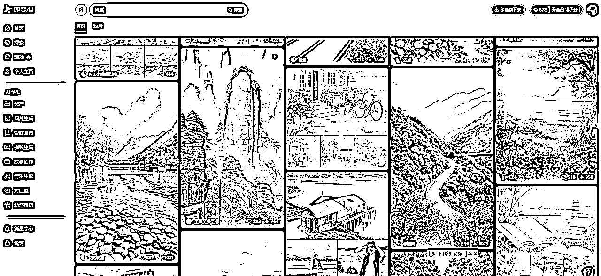

适合普通人切入AI的10个项目，模式拆解
来源：https://md8vbz6pkh.feishu.cn/docx/Q7radVu4JoClXlxXrpmcnSsBnSd
大家好，我是纸壳，最近一段时间疯狂测试AI+各种项目，过程中跟很多人交流，发现大多数人都有一点焦虑，就是看着AI相关很热闹，也不想错过这个浪潮，但是却无从下手，既不懂技术，又没有合适的项目
最近测试的项目里，有一些挺适合作为切入AI领域的抓手项目，不用研究技术，纯把AI当成工具，拿来就用，今天把这几个项目的拆解思路和操作流程分享给大家，希望能有帮助
首先说一下项目筛选标准
第一、操作难度低，要简单好上手，不需要懂技术，看流程图就能操作
第二、确定性相对较强，或者竞争度低，大概率能做起来
第三、有明确的变现方式
第四、长期可做或有延展性
最终从测过的项目中筛选出10个符合条件的项目，涉及抖音、视频号、小红书等，因篇幅限制项目只介绍最直接的操作路径， 扩展性可自行摸索
好，话不多说，上干货
项目一 萌娃祝福
案例


项目拆解
- 内容形式
- 变现方式
- 创作者收益：视频号为例，点赞10w+的作品，单条收益在1500-3000左右
- 带货：账号权重足够高之后可以间歇发带货视频，以萌娃形象讲述养生事项，带养生食品或书籍
- 项目现状
操作流程
- 图片制作

- 即梦上传提示词和参考图，生成萌娃图片，选择合适图片保存本地，小技巧，点击去画布编辑，然后右键保存为图片，可下载不带水印的图片


- 对口型
- 将保存好的图片上传至即梦对口型，将对标视频保存到本地，提取音频，上传至即梦对口型，选择大师版，生成视频

- 嗯...演示视频排队29分钟....放一个之前生成的成片吧
- 剪辑发布
- 生成的视频下载到本地，可以直接发布，也可添加到剪映进行加工，添加字幕，倍速等操作后发布
注意事项
- 这类视频爆率很高，核心在于形象和文案，尽量复刻爆款形象，文案的话，祝福类有一定违规概率，可以和治愈系文案混着发，也可以发“项目二”中的早安类文案，扩展性很强，各种文案用萌娃视角说出来都容易引起观看
项目二 早安祝福
案例

项目拆解
- 内容形式
- 变现方式
- 创作者收益：每天发布2-3条视频，逢24节气和节假日很容易爆
- 带货：账号权重足够高之后，可以逢节气发带货视频，带养生食品或书籍
- 项目现状
操作流程
- 图片制作
- 在即梦搜索风景、柳树、喜鹊等，找合适的图片，点击去做同款


- 视频制作
- 选择合适的图片，点击去生成视频，追求更好效果可以用S2.0pro。将生成的视频下载保存到本地


- 剪辑发布
- 为了不浪费积分和减少排队时间，后续演示都用我以前生成的图片和视频操作
- 将下载好的视频导入到剪映，从提前准备好的文案库中，挑选合适的文案，修改日期后，添加到剪映文本中

- 将下载好的素材添加到主轨，调整时长，添加配乐、字幕，导出发布即可

注意事项
- 市面上多数早安账号是情感类文案，竞争比较激烈，起号率低，不建议做
- 祝福类视频起号率中等，给一个提高起号率小技巧，在传统早安文案前加上生肖，如“属猴人，今天是4月23日，农历3月26，早安...”，能有效提高起号效率
- 关于文案，从广场上初一到初十扒一圈，然后扔个豆包，让它仿写就可以，遇到节气和节假日要专门出对应文案
项目三 育儿经
案例


项目拆解
- 内容形式
- 变现方式
- 带货：账号权重足够高之后，视频可以挂车卖育儿类书籍、玩具、文具等
- 项目现状
操作流程
- 获取文案和配音
- 首先下载对标视频备用，然后将对标视频链接发给豆包，提取文案
- 生成画面提示词
- 参考对标视频的图片特征，用豆包生成分镜提示词，有些提示词需要根据文案内容做调整

- 生成图片
- 根据调整后的提示词，依次用即梦生成图片，选择图片2.0pro，挑选合适的图片选择超清。
- 生成视频
- 再用即梦依次将保存的图片，生成视频，提示词按照文案内容填写，也可以用豆包生成后调整


- 剪辑发布
- 将生成的视频导入剪映，按顺序排列，调整画面时长，匹配音频，添加标题和字幕，导出上传
注意事项
- 这个模式如果想保持人物一致性，难度会飙升，前期制作只要画面内容和文案内容匹配即可，主要是靠文案和堆量爆的，画面不违和就行
- 配音的话可以用配音软件或者剪映朗读，新手的话先用对标视频的原声，后期还是要自己搞文案和配音
项目四 英语启蒙
案例
项目拆解
- 内容形式
- 变现方式
- 项目现状
操作流程
- 生成文案

- 生成图片

- 生成视频
- 选择合适的图片，依次点击生成视频，保存到本地，因为这类视频不需要很高的精准度，所以使用S2.0模型即可
- 生成配音

- 合成视频、发布
- 将保存的视频添加到剪映，对齐文案位置，与音频时长统一，添加字幕和标题，导出

注意事项
- 这个模式操作简单，变现路径明确，但是竞争非常激烈，需要做出差异化或者堆量
项目五 治愈奶奶
案例

项目拆解
- 内容形式
- 可爱的卡通形象老奶奶或老爷爷+治愈系文案+背景音乐
- 变现方式
- 创作者收益：增加收益小技巧，最后一张图片引导观众评论，如：留下你的故事
- 带货：目前以挂车带货书籍比较多，延展性带货养生食品类也可以，需搭配文案
- 项目现状
操作流程
- 生成文案
- 新手建议先扒对标账号的爆款文案或者热门情感文案，等有经验了，可用豆包生成原创文案
- 在豆包智能体里面有很多治愈系老奶奶，可以生成文案，也可以生成提示词。有些不太好用自行筛选
- 生成图片
- 拿着生成的文案，去即梦，搜治愈系老奶奶，选择喜欢的模板，生成同款，把文案改成自己想要的，依次生成图片

- 合成视频
- 将保存的图片添加到剪映，合成视频，注意跟背景音乐卡点，添加转场动画等，导出发布

注意事项
- 目前这个模式同行很多，多数账号爆一条两条就不爆了，主要是因为内容同质化，尽量做差异化内容，比如反治愈：一定要牢记，别随便对人掏心掏肺，不是每个人都会真心待你，别对任何人过于亲近，不是每个人都像你这般善良
项目六 怀旧乡村
案例
项目拆解
- 内容形式
- 变现方式
- 创作者收益：收益不稳定，需多做差异化内容，并引导观众评论
- 项目现状
操作流程
- 生成提示词
- 生成图片
- 拿着提示词去即梦生成图片，前面加上高清实拍、高饱和度等词汇

- 生成视频
- 选择合适的视频，点击超清，然后生成视频，输入想要的动作提示词，不会写的，依然找老朋友豆包


- 剪辑发布
- 将生成的视频导入剪映，添加背景音乐，调整倍速等，导出发布
注意事项
- 目前这类账号最大的问题是同质化很严重，怀旧风的扩展性不强，可以往治愈系上扩展
项目七 墙绘女孩
案例

项目拆解
- 内容形式
- 变现方式
- 项目现状
操作流程
- 生成提示词和图片
- 第一种方法，截图对标账号的画面，扔给豆包反推提示词；第二种方法，去即梦搜墙绘女孩，找模版做同款

- 生成视频
- 选择合适图片，点击超清、生成视频，提示词按照图片内容写，一般就是镜头推进，花朵随风摆动，花瓣散落等
- 剪辑发布
- 将视频导入剪映，添加背景音乐、调节色彩、添加倒放增加时长，导出发布

注意事项
- 最近刚跑起来的一种模式，已经有很多人在跟进了，流量都不错，这种绘画可延展的内容非常多，还是要注意做差异化
项目八 星座
案例

项目拆解
- 内容形式
- 变现方式
- 项目现状
操作流程
- 生成星座卡片

- 生成风景图片和视频
- 打开即梦，搜索风景和情感图片，选择合适图片，做同款

- 生成星座文案和配音
- 用豆包仿写对标视频的文案，拿着写好的文案去配音软件选择合适声音，生成配音

- 剪辑发布
- 将背景图片放入主轨，星座图片缩小至30%依次排开，打成符合片段
- 将要讲解的星座图，放置在合适时间线处，设置位置和放大关键帧，实现突出效果

注意事项
- 这种模式目前做的人不多，起号率比较高，适合抖音和小红书平台
项目九 古法养生
案例

项目拆解
- 内容形式
- 变现方式
- 项目现状
操作流程
- 生成古人图片

- 下载对标视频
- 生成动作模仿视频
- 将下载好的古人图片导入即梦--数字人--动作模仿，上传本地文件--对标视频，生成视频保存
- 剪辑发布
注意事项
- 目前这个模式非常卷，但是这个模式延展性很强，可以做古法养生、五音疗愈、食物养生等等，做出差异化有机会拿到结果
项目十 睡前故事儿童绘本
案例


项目拆解
- 内容形式
- 变现方式
- 项目现状
操作流程
- 生成儿童故事
- 生成视频
注意事项
- 这种模式现在很卷，起号率很低，可以用来练手，或者给自己家孩子做睡前故事
总结
- 上述所有项目的起号率，高中低的判断，有一定主观性，因为我们做有更丰富的经验，也能做更多的差异化，想要做的根据自己的情况酌情选择
- 不要一味模仿，前期可以抄，流程跑通之后一定要做差异化，别人用水墨风，你用卡通风；人家做古诗、你做文言文；人家做怀旧，你做养生等等，一味模仿没有出路的
- 所有项目，都可以用大量堆号来做，有想堆号的可以自行摸索，给大家看一个工作室目前堆号的现状，国风类短视频，图中每台机器都在自动批量产出
进阶项目
- 还有一些难度更大的项目，不在这个贴子里拆解了，放在下面，有感兴趣的可以自行研究
古文拆解
电影/历史人物独白
灵魂手绘
古人复活/独白
书单号
AI短剧
神话讲解